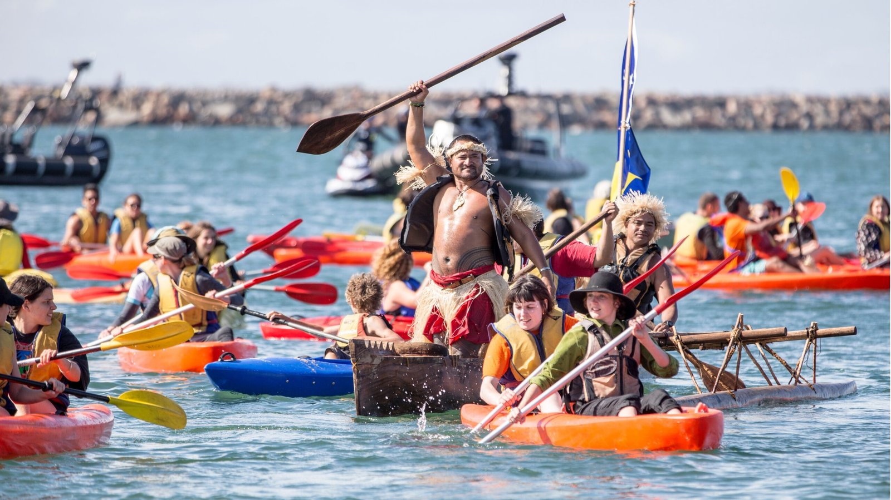
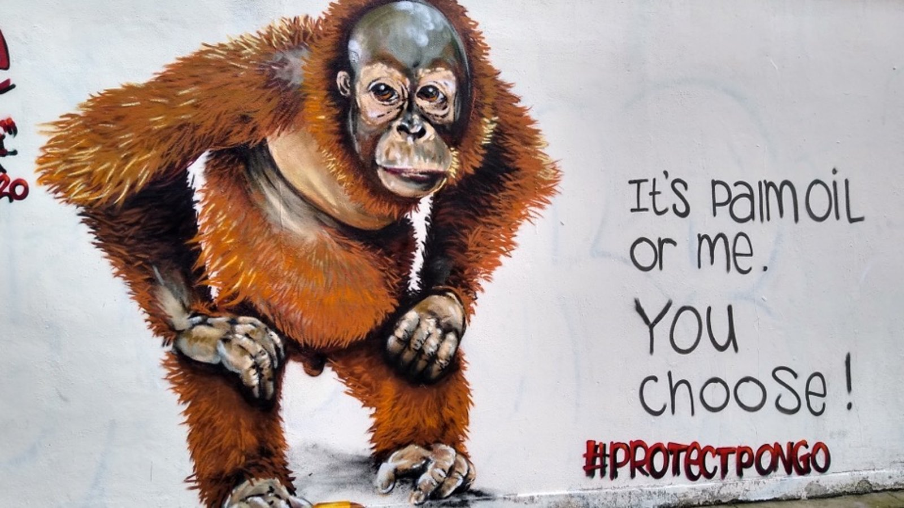
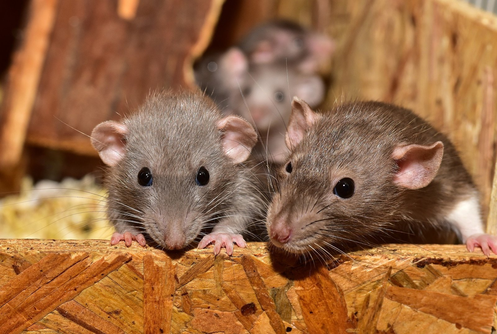
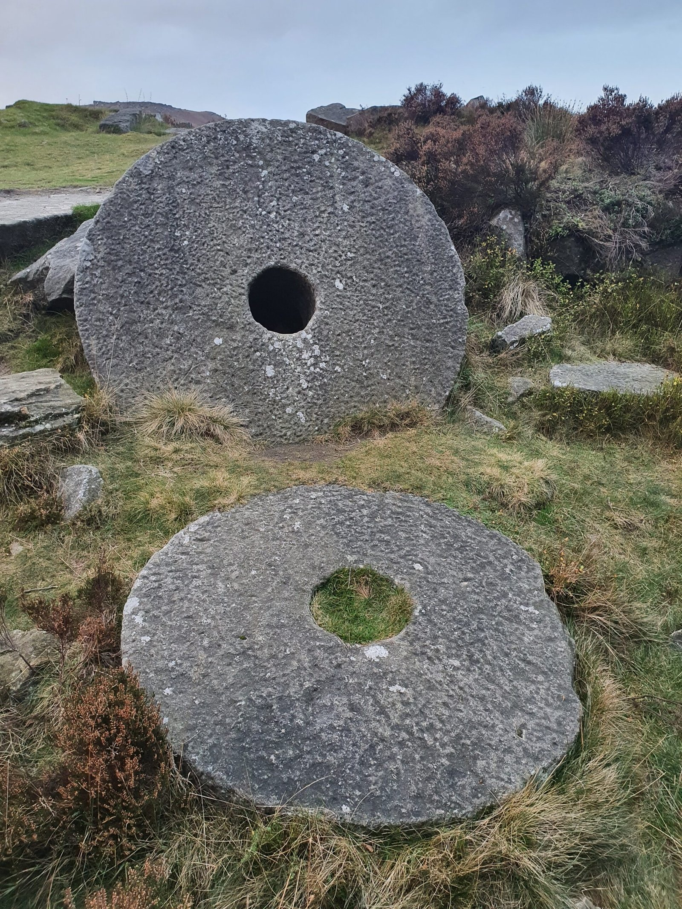
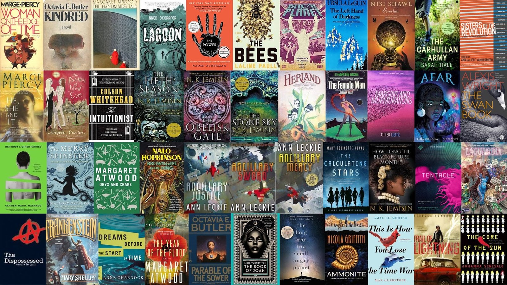

h.l.fair [@] soton.ac.uk
Dr Hannah Fair
I am a Lecturer in Human Geography at the University of Southampton, specialising in contemporary environment-society relations. Previously I was a Departmental Lecturer in Human Geography at the University of Oxford. At the heart of my research are questions of how to live well with anthropogenically transformed and transforming natures. I have explored these questions in the context of i) climate justice in the Pacific Island region ii) ethical challenges in orangutan conservation and iii) domestic pests and unruly urban ecologies. I critically situate my work in the overarching framework of the Anthropocene and draw upon decolonial, feminist, queer and more-than-human approaches.
Research
Not Drowning but Fighting: faith, activism and climate change narratives in the Pacific Islands

I completed my ESRC-funded PhD in Human Geography at University College London in 2018. In contrast with dominant framings of the Pacific Islands as helplessly vulnerable to sea level rise, I explored alternative discourses of climate change and Oceania that centred Islander agency. I focused on two understudied yet interrelated empirical domains: Indigenous-led Islander climate activism and religious understandings of and responses to climate change. Ethnographically focusing on Vanuatu and the regional activist network 350 Pacific, I drew upon the writing of decolonial scholars such as Epeli Hau’ofa and contemporary theological understandings to uncover locally meaningful and morally compelling counter-narratives of climate change in the Pacific Island region.
Outputs: Fair 2018 ‘Three Stories of Noah‘, Fair 2019 ‘From Apathy to Agency‘, Fair 2020 ‘Their Sea of Islands?‘, Fache and Fair 2020 ‘Turning Away from Wicked Ways‘, and Fair 2022 ‘Playing with the Anthropocene‘.
Image Credit: Jeff Tan Photography.
Research
The Global Lives of the Orangutan: reconfiguring conservation in/for the Anthropocene

I was a postdoctoral research associate for the European Research Council-funded ‘Global Lives of the Orangutan‘ project based at Brunel University London (2018-2020). I conducted an ethnography of virtual orangutan ‘adoption’ schemes run mainly by charities in the global North, through which rescue and rehabilitation centres in Borneo and Sumatra obtain financial backing and raise awareness about the plight of orangutan. I examined how notions of kinship, relatedness, intimacy and care are negotiated in this field, and asked how they shape and are shaped by mounting public awareness about extinction, environmental crisis, interspecies ethics and the Anthropocene.
Outputs: Fair & Schreer 2025 ‘Lively Gifts and Exclusive Encounters‘; Fair et al. 2023 ‘Dodo dilemmas‘; Chua et al. 2021 ‘Only the orangutans get a life jacket‘; Fair 2021 ‘Feeding Extinction‘; Chua et al. 2020 ‘Conservation and the Social Sciences‘; and Chua and Fair 2019 ‘Anthropocene‘.
Image Credit: Hannah Fair
Research
SPIDER: Situating Pests: Impacts, Disgust, Expertise and Responsibility

SPIDER, my current research project explores the financial and emotional impacts of living with domestic pest infestations. I investigate what responses to infestation are chosen, by whom, and with what consequences. My work expands debates regarding multispecies flourishing in more-than-human geography, through examining unwanted co-existence with ‘unloved others’, species that are hard to anthropomorphise, and which evoke disgust. I am interested in professional pest control as an undervalued profession and mode of natural history knowledge, and the future of the industry in light of the technical and regulatory challenges it faces.
I work in collaboration with the British Pest Control Association, as part of their Academic Relations Working Group.
Funding:
– Secured £6,000 seed funding from the John Fell Fund for the
pilot project ‘Changing Landscapes of Domestic Pest
Management’
– Awarded a £300,000 ESRC New Investigators Grant, and a Royal
Geographical Society Small Grant for SPIDER (Situating Pests:
Impacts, Disgust Expertise and Responsibility)
Presentations:
– Presented at the 2022 Royal Geographical Society (RGS)
conference in the ‘Hidden Animals’ session
– Invited seminar speaker for Rice University Texas Centre for
Environmental Studies (March 2023)
– Co-organised a session at the 2023 American Association of
Geographers’ (AAG) conference in Denver, CO, on ‘Dirt, Labor,
Death and the More-than-Human’
– Presented at the 2024 AAG, and co-organised a session at the
2024 RGS on ‘More-than-Human Cartographies’
– Presented at the 2025 AAG and invited seminar speaker for
the University of California Berkeley Geography Colloquium
Outputs: Fair 2025 ‘Getting Dusty with Mice‘; Fair 2024 ‘Labor, Violence and the Unfamiliar‘; Fair and Hodgetts 2024 ‘Animal Geographies’.
Publications

Journal Articles
Fair, H. 2025. Getting dusty with mice: domestic experiments in more-than-human methods. Cultural Geographies https://doi.org/10.1177/14744740251383866
Fair, H. & Schreer, V. 2025. Lively gifts and exclusive commodities: Rethinking encounter value in orangutan conservation. Geoforum 159 https://doi.org/10.1016/j.geoforum.2025.104213
Montana, J., Welden, E. A., Anderson, L. M., Bennett, A., Byfuglien, A., Bhalla, S., Fair, H., Greenhough, B., Hafferty, C., Hirons, M., Kumeh, E. M., Maguire-Rajpaul, V., McDermott, C. L., Mulyani, M., & Picot, L. 2025. Ten facts from critical and interpretive social sciences for environmental research. iScience, 28(6). https://doi.org/10.1016/j.isci.2025.112736
Fair, H. 2024. Labor, Violence and the Unfamiliar: Animals’ Geographies of the More-than-Human Home. Progress in Environmental Geography. https://doi.org/10.1177/27539687241278367
Fair, H. and McMullen, M. (2023). Toward a Theory of Nonhuman Species-Being. Environmental Humanities 15 (2): 195–214. https://doi.org/10.1215/22011919-10422366
Fair, H., Schreer, V., Keil, P., Kiik, L. and Rust, N. (2023) Dodo dilemmas: Conflicting ethical loyalties in conservation social science research. Area 55: 245– 253. https://doi.org/10.1111/area.12839
Fair, H. (2022) Playing with the Anthropocene: Board game imaginaries of islands, nature, and empire. Island Studies Journal 17(1): 85-101. https://doi.org/10.24043/isj.165
Chua, L., Fair, H., Schreer, V., Stepien, A. and Thung, P.H. (2021) Only the orangutans get a life jacket: Uncommoning responsibility in a global conservation nexus. American Ethnologist. 48(4): 370-385. https://doi.org/10.1111/amet.13045
Fair, H. (2021) Feeding extinction: navigating the metonyms and misanthropy of palm oil boycotts. Journal of Political Ecology, 28(1). https://doi.org/10.2458/jpe.3001
Chua, L., Harrison, M.E., Fair, H., Milne, S., Palmer, A., Rubis, J., Thung, P., Wich, S., Büscher, B., Cheyne, S.M., Puri, R.K., Schreer, V., Stepien, A. and Meijaard, E. (2020) Conservation and the social sciences: Beyond critique and co‐optation. A case study from orangutan conservation. People and Nature 2: 42-60. https://doi.org/10.1002/pan3.10072
Fair, H. (2020) Their Sea of Islands? Pacific Climate Warriors, Oceanic identities and world enlargement. The Contemporary Pacific, 32(2): 341-369. https://doi.org/10.1353/cp.2020.0033 (also available here)
Fache, E., Fair, H. & Kempf, W. (Eds.) (2020). Higher Powers: Negotiating Climate Change, Religion and Future in Oceania (edited special issue). Anthropological Forum 30(3).
Fache, E. and Fair, H. (2020) Turning away from wicked ways: Christian climate change politics in the Pacific Island region. Anthropological Forum, 30(3): 233-253. https://doi.org/10.1080/00664677.2020.1811953 (also available here)
Fair, H. (2018) Three stories of Noah: navigating religious climate change narratives in the Pacific Island region. Geo: Geography and Environment, 5(2). e00068. https://doi.org/10.1002/geo2.68
Book Chapters
Hodgetts, T., and Fair, H. (2024). Animal Geographies. In: Warf, B. (eds) The Encyclopedia of Human Geography. Springer, Cham. https://doi.org/10.1007/978-3-031-25900-5_203-1
Fair, H. (2019) From apathy to agency: exploring religious responses to climate change in the Pacific Island region. In, Kloeck, C. and Fink, M. (eds.) Dealing with Climate Change on Small Islands: Toward Effective and Sustainable Adaptation. Göttingen University Press, Göttingen. pp. 175-194. https://doi.org/10.17875/gup2019-1216
Chua, L. and Fair, H. (2019) Anthropocene. In The Cambridge Encyclopedia of Anthropology (eds) F. Stein, S. Lazar, M. Candea, H. Diemberger, J. Robbins, A. Sanchez & R. Stasch. http://doi.org/10.29164/19anthro
Book Reviews
Fair, H. (2018) Curating the Future: Museums, Communities and Climate Change. The Journal of Pacific History, 55(3): 342-343. https://doi.org/10.1080/00223344.2018.1481323
Image Credit: Hannah Fair
Speculative Fiction

I explore speculative fiction and feminist sci-fi as a tool for imagining and exploring possible ecological futures. From 2017-2020 I was the co-ordinator of the Housmans Feminist Sci-Fi Book Club, an editor of the Not Afraid of the Ruins creative writing project, and have delivered workshops on ‘World-Building Utopia Through Feminist Sci-Fi’.
I’ve also explored the power of creative environmental imaginaries in the context of strategy board games in my piece ‘Playing with the Anthropocene‘.
Image Credit: Amy Bellamy